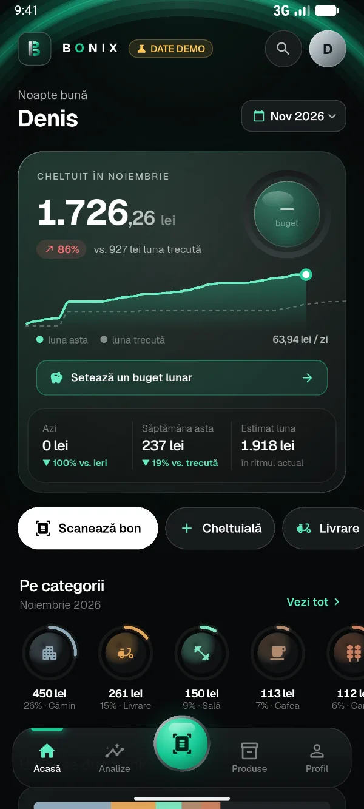
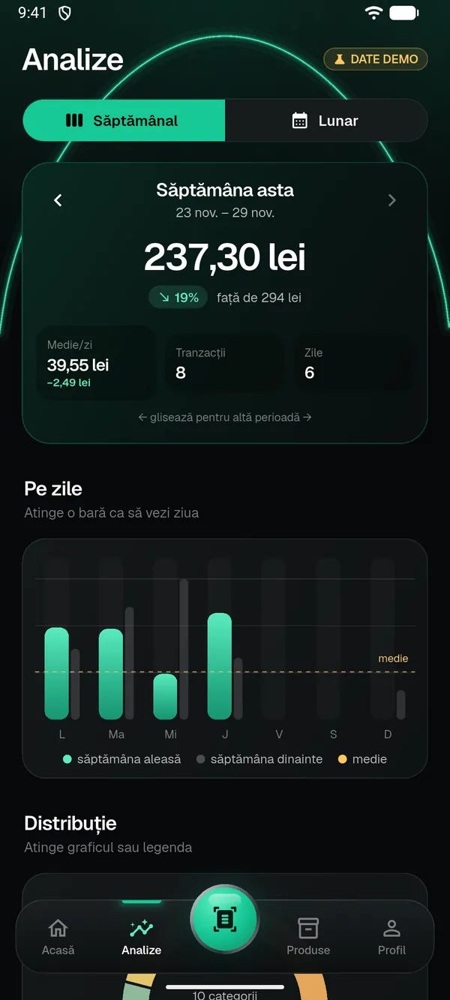
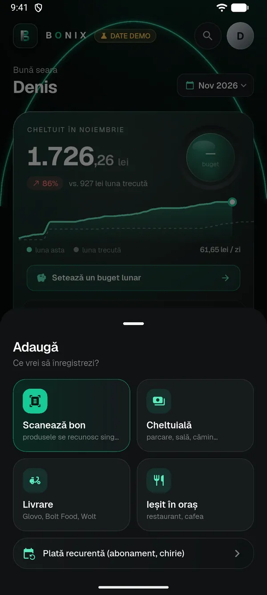
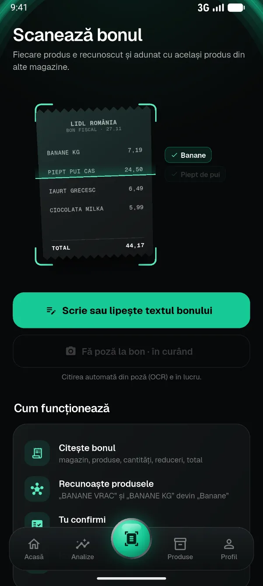
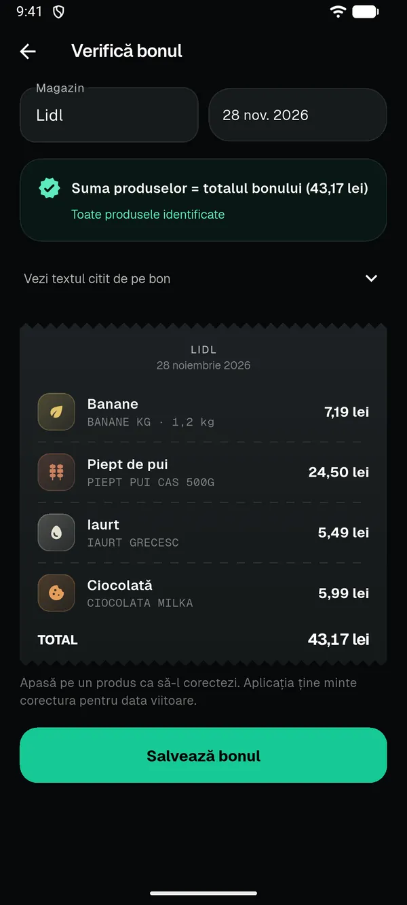
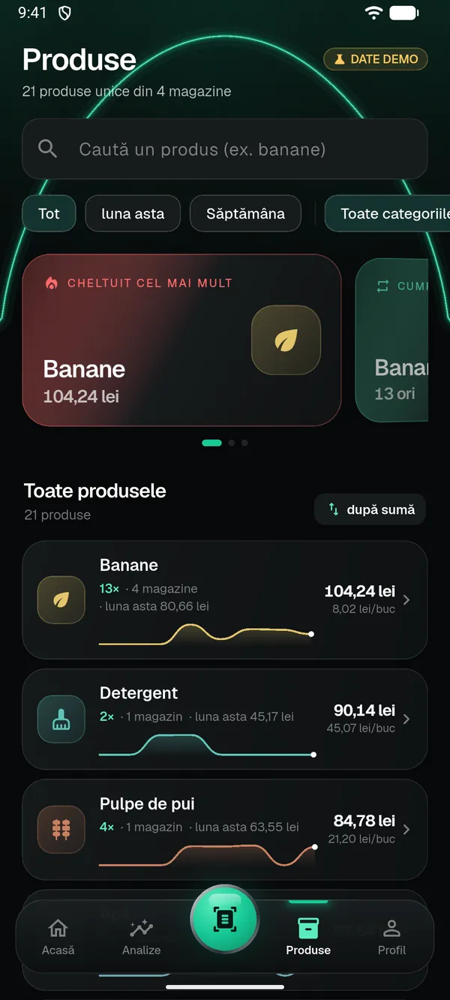
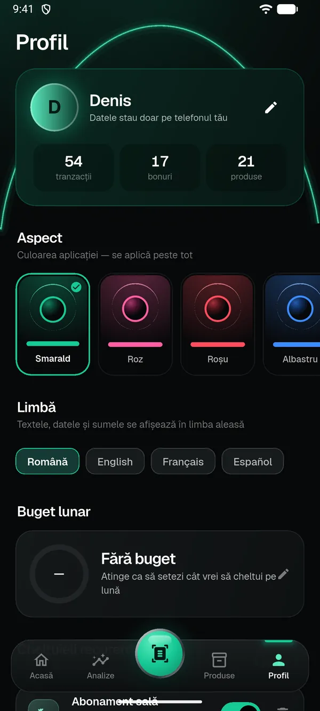

bani.dart
Sume în bani, nu în zecimale
Toate sumele sunt numere întregi, în bani: 12,50 lei e 1250. Așa nu apar erori de rotunjire când aduni sute de bonuri.
12,50 lei → 1250
Toate proiecteleCH 02, în lucru, 2026
Vreau să știu nu doar cât am dat pe mâncare, ci cât pe banane. Fac poză bonului și Bonix îl citește offline, recunoaște fiecare produs (bananele de la Lidl și cele de la Kaufland ajung în același loc) și arată unde se duc banii, pe săptămână și pe lună. Totul stă pe telefon.

Capturi din aplicație, cu datele demo01 / Ecranele






Capturi din aplicație pe un emulator Android, cu datele demo din aplicație (5 săptămâni de bonuri inventate, marcate „DATE DEMO”), în română.
02 / Problema
Aplicațiile de buget arată categorii mari: mâncare, transport, ieșiri. Eu vreau să văd și produsele: cât am dat pe banane, cât pe piept de pui, cât pe parcare.
Problema e bonul. Fiecare magazin scrie același produs altfel: prescurtat, cu gramaj, cu coduri. Ca să adune corect, aplicația trebuie să știe că BANANE KG de la Lidl și BANANE VRAC de la Kaufland sunt același lucru.
03 / Bonul
Fac poză bonului sau o aleg din galerie, iar telefonul o citește singur, offline, cu Google ML Kit. Rândurile se reconstruiesc după unghiul pozei, deci merge și când bonul e strâmb. Apoi parserul citește magazinul, rândurile cu preț, cantitățile (1,234 KG x 6,99), reducerile și linia TOTAL, și verifică dacă rândurile adună cât totalul. Dacă un preț lipsește, îl calculează din cantitate și preț unitar și îl marchează; rândurile pe care nu le poate citi le raportează, nu le inventează.
Pe bonuri reale, fotografiate cu telefonul: Lidl 10 din 10 produse, 64,77 lei, și Carrefour 4 din 4, 26,23 lei.
Pe urmă fiecare rând devine un produs, în trei pași, în ordine:
1 · aliasuricorecturile tale, ținute minte pe magazin: îi spui o dată ce e un rând și știe la bonurile viitoare2 · dicționar132 de reguli cu cuvinte-cheie, cele mai specifice primele (un „suc portocale” e suc, nu portocale); repară greșeli de OCR (cifre în loc de litere, cuvinte rupte) și înțelege prescurtările3 · primul cuvântdacă nu știe produsul, ia primul cuvânt și îl marchează „verifică”, ca să-l confirmi tuPentru un produs necunoscut pot căuta online (Open Food Facts), doar când cer eu. Garanția SGR și ecotaxa ajung într-o categorie separată, „Garanții și taxe”, nu printre produse.
Același bon scanat de două ori e blocat: fiecare bon are o amprentă din magazin, dată, total și rânduri.
04 / Sub capotă
bani.dart
Toate sumele sunt numere întregi, în bani: 12,50 lei e 1250. Așa nu apar erori de rotunjire când aduni sute de bonuri.
12,50 lei → 1250
db.dart
Produsele sunt comune tuturor magazinelor; fiecare rând de bon păstrează și textul original. Corecturile stau în aliasuri, iar indexurile pe dată și pe produs țin analizele rapide.
aliasuri(text_bon PRIMARY KEY, produs_id)
analiza.dart
Ia ritmul zilnic din ultimele 4 săptămâni, fără plățile fixe, și adaugă plățile recurente care mai urmează luna asta. Spune și cât de sigură e: sub 2 săptămâni de date, încrederea e scăzută.
până acum + ritm × zile rămase + fixe
main.dart
Am măsurat timpii de cadru pe telefon, cu un build de test care îi scrie în log. Paginile se construiesc dinainte, sub ecranul de încărcare, și animațiile ascunse sunt oprite: pe Acasă, în repaus, nu se desenează niciun cadru.
8,3 ms / cadru
05 / Unde e acum
Codul ajunge pe GitHub după ce curăț proiectul.
Toate proiectele